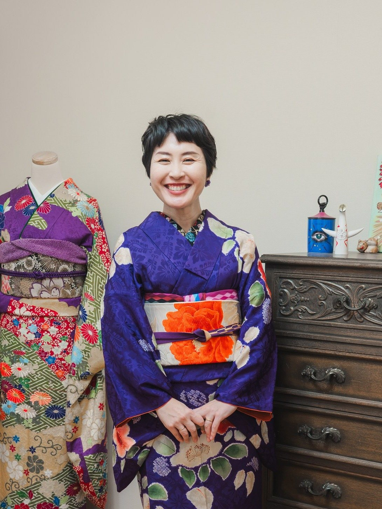
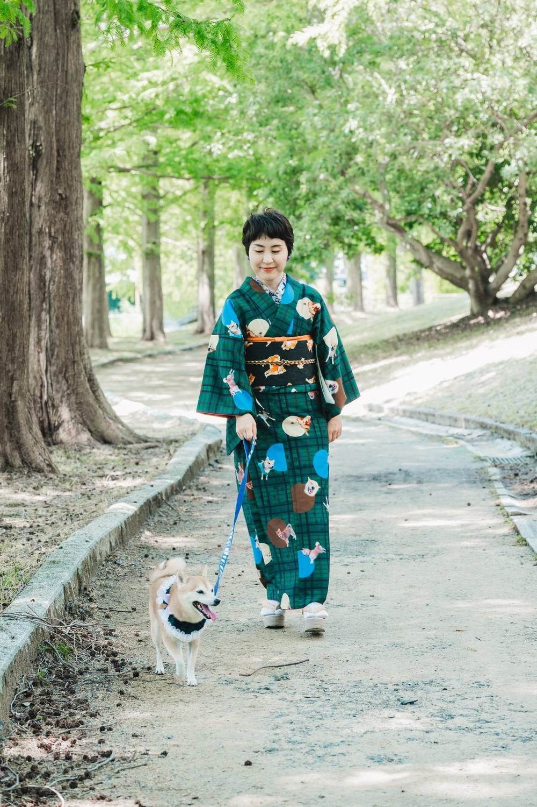
着物は、なんだか敷居が高い気がする
着られても、着ていく場所がない
親の着物はあるけれど、組み合わせがわからない
お手入れが大変そうで、踏み出せない
そのためらい、ぜんぶほどけます。
着物は、思っているよりずっと自由なものです。
和洋折衷から正統派まで。
「きちんと」も「自分らしく」も、どちらも楽しんで学べます。
ルールに縛られるのではなく、まずは着物のある時間を心地よく感じてもらうこと。あず着物教室は、そんな思いから生まれた少人数の着付け教室です。
不器用な方も、まったくの初心者さんも大丈夫。一人ひとりのペースに寄り添いながら、ゆっくり丁寧にお伝えします。
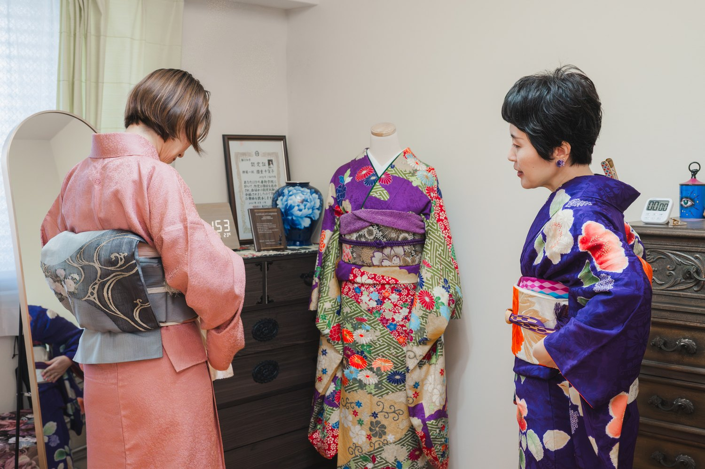
教え方の三つの約束
着付けを学ぶことから、着物を着て出かける楽しみまで。あなたの「着物のある暮らし」を、いろいろなかたちで支えます。
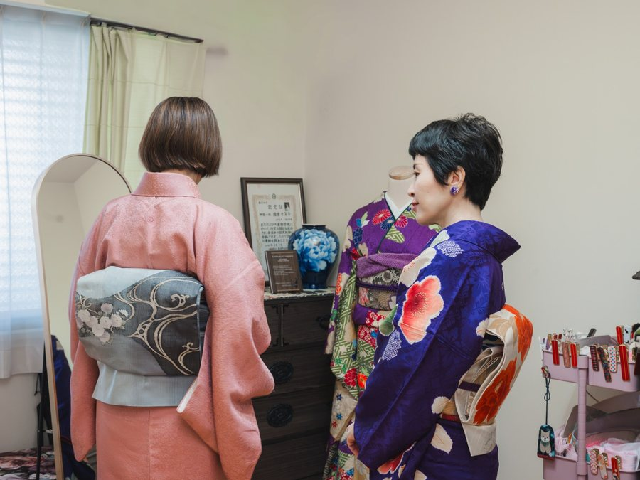
少人数制で、基礎からじっくり。自分で着られるようになることを目指します。
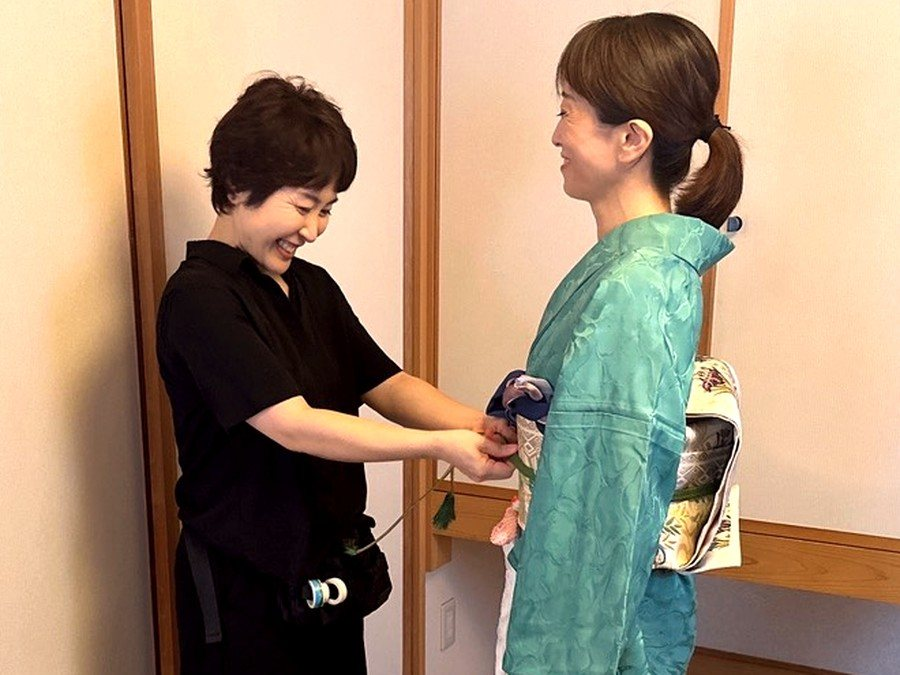
大切な日のお支度に。ご指定の場所へ伺い、きれいに着付けいたします。
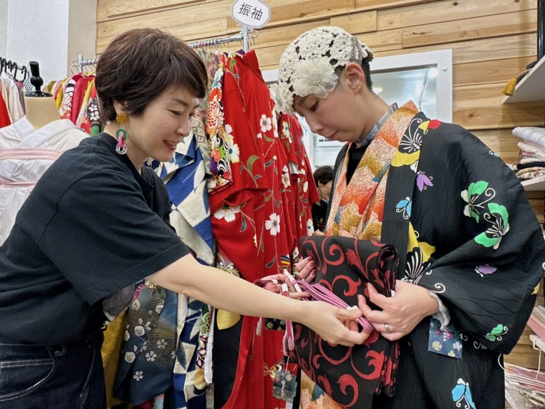
着物や帯を選ぶとき、お店へ一緒に。ご予算とご要望に合わせて、必要なものだけを見極めるお手伝いをします。
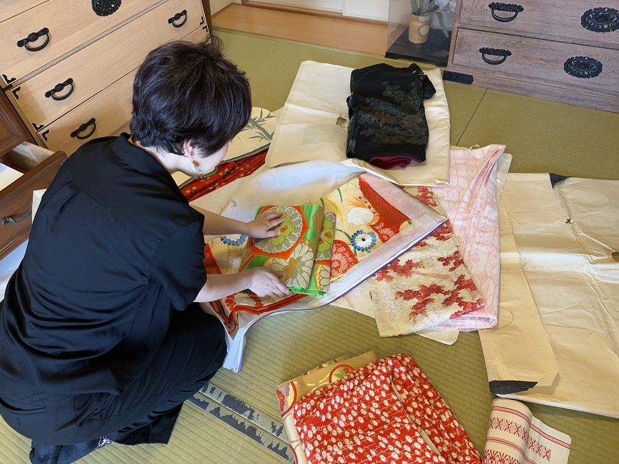
手持ちの着物と帯の組み合わせ方を、一緒に考えてご提案します。お手入れのご相談も。
ご自宅の着物を拝見し、使える物・組み合わせ・畳み方・お手入れの仕方まで。着ない着物のお引き取りも。
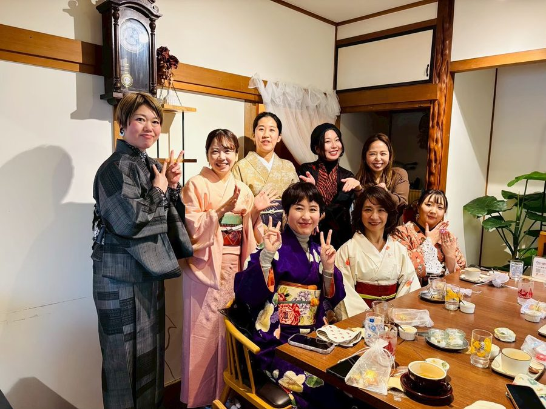
着物で食事会やお出かけ会を企画。着る機会づくりまで、まるごと楽しめます。
「親の着物はあるけれど、どう使えばいいかわからない」。
こうしたお悩みに応えるサービスは、実はあまりありません。一棹まるごと、一緒に解きほぐしましょう。
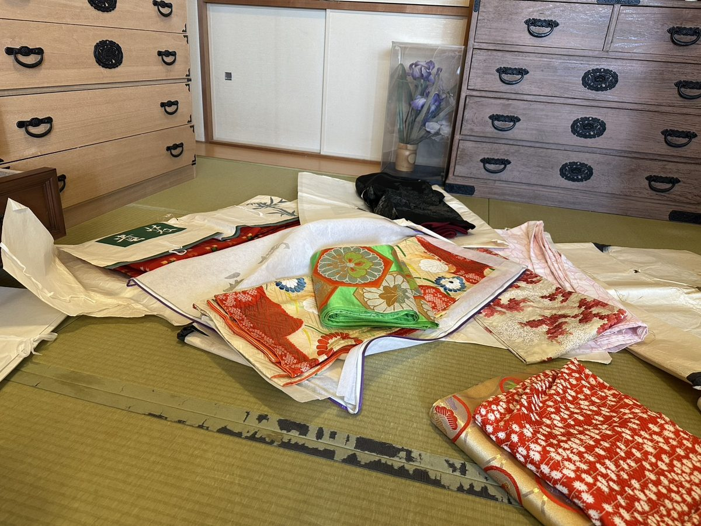
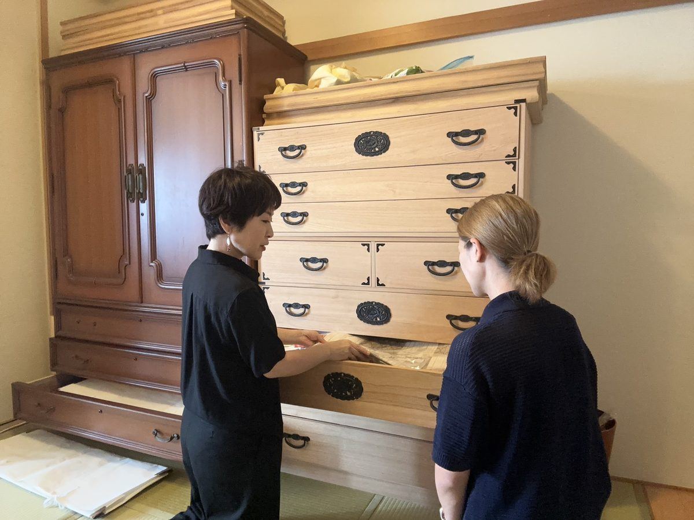
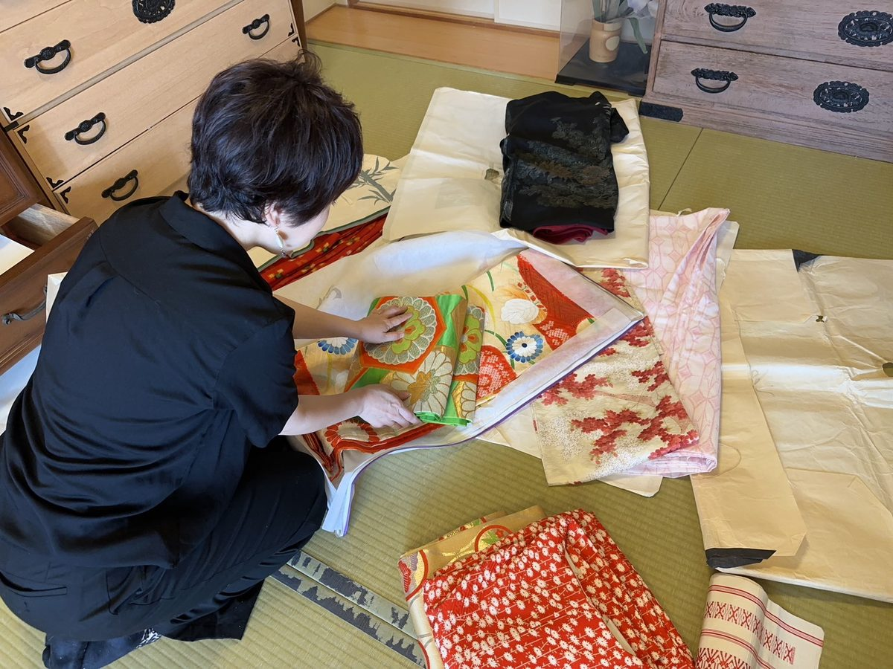
ご自宅の着物箪笥を診断。今ある物で使える物・組み合わせをご提案します。
新たに揃えるとよい物まで、ご予算となりたい着姿に合わせてアドバイス。
ご希望があればお買い物の同行も。失敗のないお買い物をお手伝いします。
必要のない高額な着物の販売は、一切しません。
あなたに本当に必要なものだけを、一緒に。
はじめての方は、まず体験レッスンから。何を用意すればいいか、続けなければいけないのか。よくいただく不安に、先にお答えしておきます。
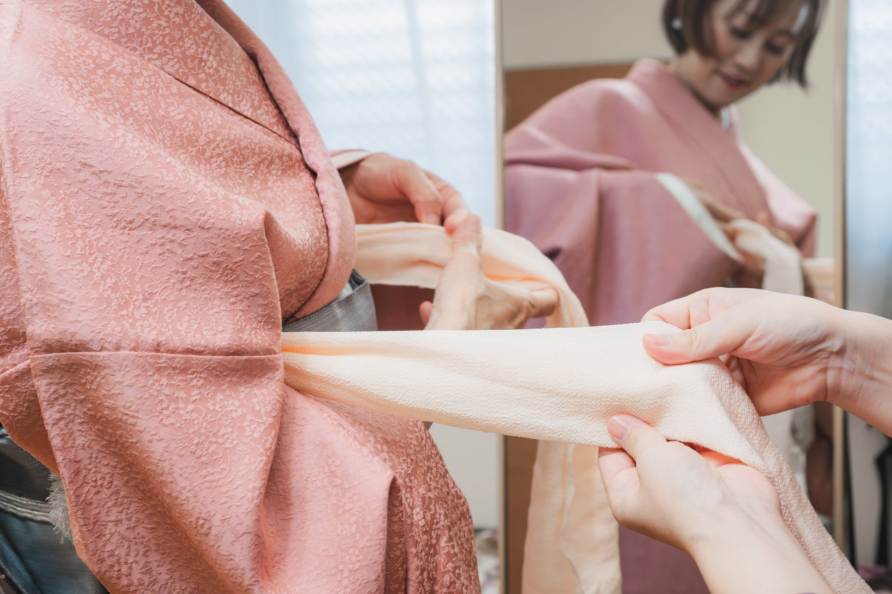
「着てみたい」だけで大丈夫です。LINE・お問い合わせフォーム・Instagramのどこからでも。レッスンは平日を中心に、ご相談のうえ日程を決めています。
初回は手ぶらでお越しください。着物も道具も、すべてお貸しできます。場所は阪急千里線・南千里駅から徒歩約13分（詳しい所在地はお申込み後にご案内します）。
体験のあとに、ゆっくり考えていただけます。その場でお返事をいただく必要はありません。合わないと感じたら、そこまでで大丈夫です。
2回目のレッスンで残金 ¥40,000 をお支払いください。全7回の最終回には、長襦袢から20分で、ご自分ひとりで着られるようになります。
※ 行事に向けて訪問着などを着たい方は「礼装初心者さんコース」の体験レッスン（¥5,000）から。続ける場合は2回目に残金 ¥40,000 をお支払いいただきます。
習っても着る機会がなければ、せっかくの着物ももったいない。だからあず着物教室では、生徒さん同士の食事会など、着物を着て出かける機会を企画しています。
参加はもちろん自由。気の合う仲間と、着物のある時間を気軽に楽しんでいただけます。
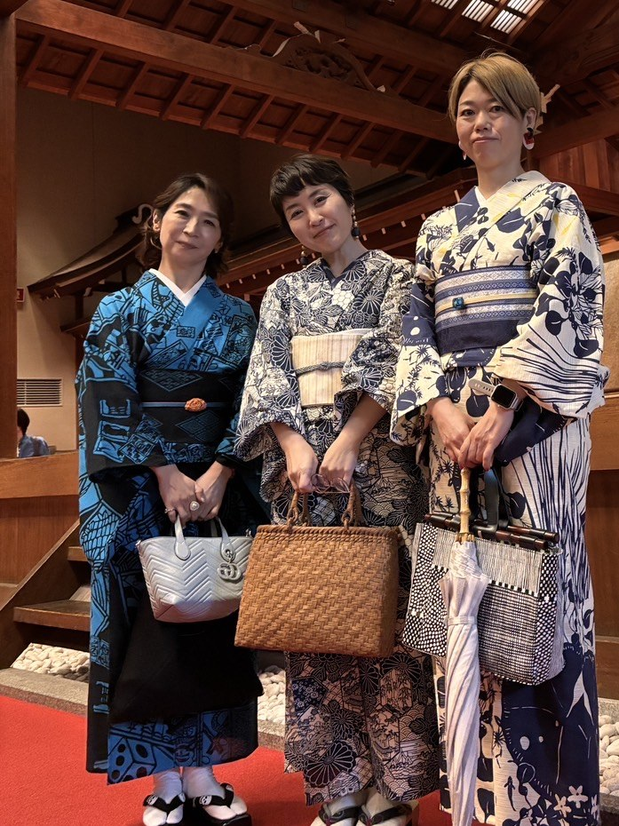
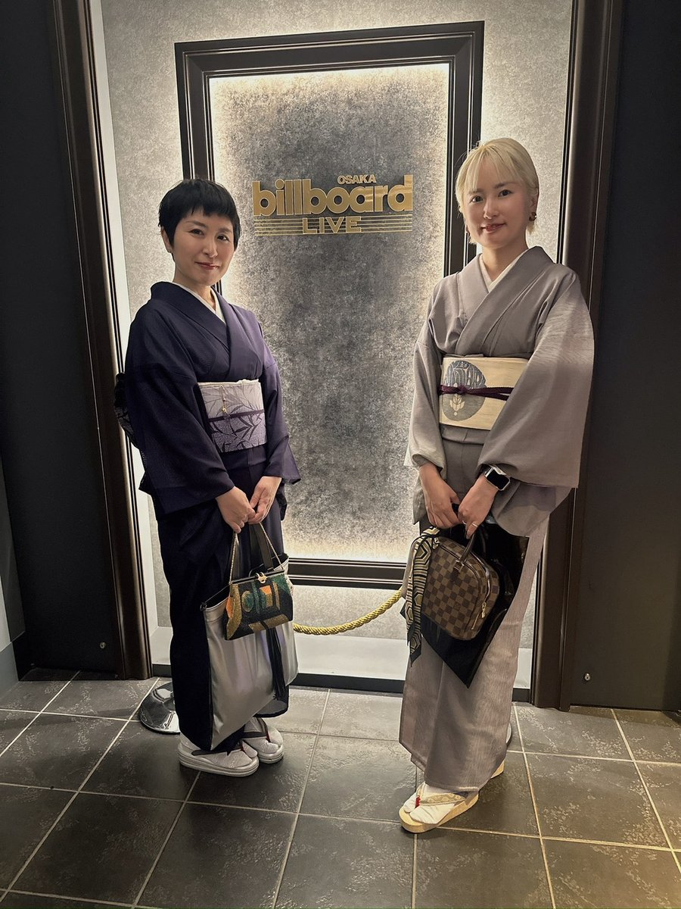
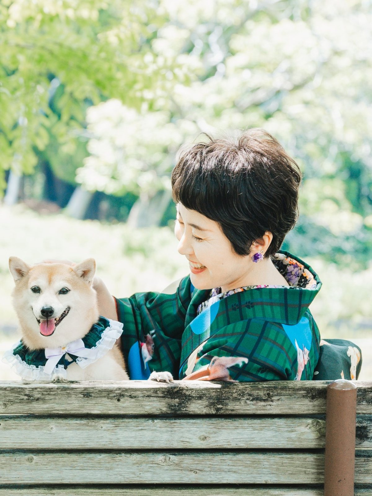
あず着物教室 主宰
「着物って、もっと自由でいいんだ」。そう感じてもらえる時間をお届けしたくて、少人数の教室を続けています。
不器用さんも初心者さんも、どうか身構えないでください。一人ひとりのペースに合わせて、丁寧にお伝えします。あなたの「着てみたい」を、いちばん近くで応援します。
教室の名前は、看板犬で柴犬の「あずき」から。レッスンの日は、あずきもそっとお出迎えします。
まずは体験レッスンから。続けるかどうかは、体験のあとに決めていただけます。
レッスンは平日を中心に、ご相談のうえ日程を決めています。表示はすべて税込です。
阪急千里線 南千里駅より徒歩約13分
※ 詳しい所在地はお申込み後にご案内します
地下鉄御堂筋線 中津駅 1番出口より徒歩1分
美容サロン Dali にて、日程により開催しています
「着られるようになりたい」「箪笥を見てほしい」。どんな小さなことでも大丈夫です。
下記いずれかからお気軽にメッセージください。